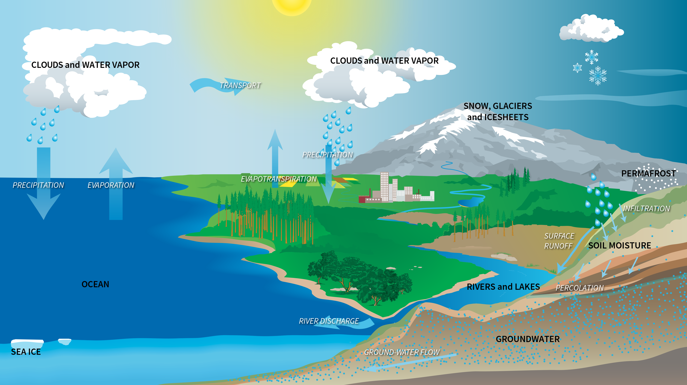

🌍 The Water Cycle: Nature’s Lifeline Explained
Introduction
Have you ever wondered where the rain comes from, or why puddles disappear after a sunny day? It’s all part of a fascinating, never-ending process called the water cycle, or hydrological cycle. This natural system continuously moves water through the Earth’s atmosphere, land, and oceans — keeping all living things alive.
In this article, we’ll dive into the key stages of the water cycle, explore its importance, and look at how it’s being affected by climate change.
🔁 Key Stages of the Water Cycle
1. Evaporation
The sun heats up water in rivers, lakes, and oceans, turning it into water vapor. This vapor rises into the air.
When the sun warms oceans, rivers, lakes, and even puddles, some of the water molecules gain enough energy to break free from the surface and rise into the atmosphere as water vapor. This is an essential step in moving water from Earth’s surface into the sky.
Examples:
- Water from the sea surface turning into vapor on a hot day.
- A wet sidewalk drying after the sun comes out.
2. Transpiration
Plants also release water into the air — through a process called transpiration. It’s like the plants are “breathing” out water vapor from their leaves.
Transpiration is similar to evaporation but occurs in plants. Plants absorb water through their roots, and some of that water travels up to the leaves. From there, it escapes into the air through small pores called stomata.
This process plays a critical role in maintaining the atmosphere's moisture and also helps regulate plant temperature.
Combined Process:
Evaporation and transpiration together are often called evapotranspiration.
Fun Fact:
Forests release massive amounts of moisture into the air daily. This is why cutting down forests can reduce rainfall in an area.
3. Condensation
As the water vapor rises and cools, it turns into tiny droplets, forming clouds. This process is called condensation.
After water vapor rises high into the atmosphere, it cools down. When it cools, it transforms back into tiny liquid water droplets. This change from gas to liquid is called condensation.
These droplets gather around tiny particles in the air (like dust or salt) to form clouds or fog.
Examples:
- Clouds forming in the sky.
- Water droplets on the outside of a cold soda can.
Why It Matters:
Condensation is the step that turns invisible water vapor into visible clouds, which leads to precipitation. Without it, we wouldn’t get rain or snow.
4. Precipitation
When the clouds get heavy, they release water as rain, snow, hail, or sleet — depending on temperature and conditions.
When the water droplets in clouds become too heavy to stay suspended, they fall back to Earth as precipitation. This can be in various forms:
- Rain (liquid water)
- Snow (ice crystals)
- Sleet (ice pellets)
- Hail (frozen balls of layered ice)
What Determines the Type of Precipitation?
It depends on the temperature in the air. Warm air leads to rain, while cold air produces snow or ice.
Why It Matters:
Precipitation is how water returns to Earth’s surface. It replenishes lakes, rivers, soil moisture, and groundwater supplies.
5. Collection (Runoff & Infiltration)
Precipitated water either:
- Runs off into rivers, lakes, and oceans, or
- Soaks into the ground (called infiltration), replenishing underground aquifers.
This completes the cycle and prepares water for evaporation again.
6. Runoff – Surface Flow of Water
Not all rainwater soaks into the ground. Some flows over land surfaces, especially when the ground is saturated, frozen, or covered by pavement or rocks. This is called runoff.
Runoff moves water from high areas to lower areas, eventually reaching rivers, lakes, and oceans.
Why It’s Important:
Runoff helps redistribute water across landscapes. However, excessive runoff, especially in urban areas, can cause flooding or carry pollutants into natural waterways.
7. Infiltration – Water Soaks Into the Ground
Infiltration is the process where water seeps into the soil and becomes part of the groundwater system. This happens mostly in areas where the soil is porous and not saturated.
What Happens After Infiltration?
- Water may be taken up by plant roots.
- It may collect in underground layers (called aquifers).
- Eventually, groundwater can return to the surface through springs or wells.
🌦️ How These Stages Work Together
All of these processes are part of a closed loop. Here’s how they connect:
- Evaporation & Transpiration send moisture into the air.
- Condensation forms clouds.
- Precipitation returns water to the ground.
- Collection, runoff, and infiltration distribute and store water.
- The sun starts the process again.
The cycle never stops. It may take minutes for water to evaporate and return as rain, or it could take hundreds of years for groundwater to resurface.
🔍 Real-World Applications of the Water Cycle
🌾 In Agriculture:
Farmers rely on rainfall and groundwater for irrigation. Understanding the water cycle helps them plan better for planting and droughts.
🏙️ In Urban Planning:
Cities manage runoff using storm drains and green spaces to avoid flooding.
🌍 In Climate Science:
Climate change is shifting patterns in the water cycle — including stronger storms, longer droughts, and melting glaciers.
✅ Summary Table
| Stage | What Happens | Importance |
|---|---|---|
| Evaporation | Water turns to vapor | Starts the water cycle |
| Transpiration | Plants release water vapor | Adds moisture to the air |
| Condensation | Vapor becomes liquid | Forms clouds |
| Precipitation | Water falls to Earth | Delivers water to land |
| Collection | Water gathers in oceans/rivers | Water storage |
| Runoff | Water flows over land | Moves water; can cause erosion or flooding |
| Infiltration | Water soaks into the ground | Recharges groundwater |
🧠 Final Thoughts
The water cycle is one of Earth’s most important natural systems. It recycles water, nourishes plants, maintains rivers and lakes, and regulates climate. Each stage — from evaporation to infiltration — plays a unique role in keeping life thriving on our planet.
By understanding how the water cycle works, we can better manage our water use, protect the environment, and prepare for a changing climate.
1. Supports All Life on Earth
Water is vital for every living organism. The water cycle ensures that fresh water is continuously distributed across the planet. Plants use water to grow and produce oxygen, animals rely on water for hydration and bodily functions, and humans need water for drinking, cooking, and hygiene.
Without the water cycle, water would become stagnant, and life as we know it would struggle to exist.
2. Maintains Ecosystems and Habitats
The water cycle plays a key role in maintaining diverse ecosystems — from lush rainforests to arid deserts. It replenishes lakes, rivers, wetlands, and underground aquifers that serve as habitats for countless species.
Seasonal precipitation influenced by the water cycle regulates when and where plants grow, which in turn affects food availability for animals.
3. Regulates Climate and Weather Patterns
Water vapor in the atmosphere influences weather and climate. The processes of evaporation and condensation help form clouds that can cool the Earth’s surface through shade and rain. Precipitation patterns shape local climates and determine rainfall availability for agriculture and drinking water.
Changes in the water cycle can lead to droughts, floods, and storms, which impact both natural environments and human societies.
4. Recharges Groundwater and Surface Water
Rain and snow replenish underground water sources (aquifers) through infiltration. This groundwater eventually feeds springs, wells, and rivers, providing a steady supply of fresh water even during dry periods.
This natural recharge process is crucial for agriculture, drinking water, and industrial uses.
5. Cleans and Purifies Water
As water moves through the cycle, it naturally filters through soil and rocks during infiltration. This helps remove impurities and pollutants, contributing to cleaner groundwater.
Additionally, evaporation leaves behind salts and contaminants, which is why ocean water is salty, but rainwater is fresh.
6. Enables Agriculture and Food Production
Farmers depend on the water cycle for irrigation and soil moisture. Reliable rainfall patterns help crops grow, which feeds populations worldwide.
Understanding the water cycle also helps manage water resources better, especially in regions prone to drought or flooding.
How Human Activity Affects the Water Cycle
While the water cycle is a natural process, human activities like deforestation, urbanization, and pollution can disrupt it. For example:
- Cutting down trees reduces transpiration, which can lower rainfall.
- Paved surfaces increase runoff, reducing infiltration and increasing flood risk.
- Pollution contaminates water sources, harming ecosystems and health.
Protecting the water cycle through conservation and sustainable practices is critical for future water security.
Conclusion: The Water Cycle Is Life’s Lifeline
In summary, the water cycle is essential because it:
- Provides fresh water to all living things
- Sustains ecosystems and biodiversity
- Regulates weather and climate
- Recharges vital groundwater supplies
- Naturally cleanses water
- Supports agriculture and food production
By understanding and respecting this cycle, we can better protect one of Earth’s most precious resources — water.
Start appreciating the water cycle today, and help keep our planet healthy for generations to come!
How Climate Change Affects the Water Cycle
Understanding the Impact of Climate Change on Earth’s Vital Water Cycle
The water cycle is a fundamental natural process that keeps water moving across the Earth’s surface, atmosphere, and underground. It sustains all forms of life by regulating weather patterns, replenishing freshwater sources, and maintaining ecosystems. However, climate change is disrupting this delicate balance, causing significant effects on the water cycle worldwide.
In this article, we will explore how climate change impacts the water cycle, the consequences of these changes, and what it means for our planet’s future.
What Is the Water Cycle?
The water cycle, also called the hydrologic cycle, involves several key processes:
- Evaporation: Water from oceans, lakes, and rivers turns into vapor.
- Transpiration: Plants release water vapor into the atmosphere.
- Condensation: Water vapor cools and forms clouds.
- Precipitation: Water returns to Earth as rain, snow, or hail.
- Runoff and Infiltration: Water flows over land or soaks into the ground, replenishing water sources.
How Does Climate Change Affect the Water Cycle?
Climate change, caused primarily by human activities like burning fossil fuels and deforestation, leads to rising global temperatures. These temperature changes affect each stage of the water cycle in several ways:
1. Increased Evaporation Rates
Warmer temperatures cause more water to evaporate from oceans, lakes, and soils. This intensifies moisture in the atmosphere, which can lead to more frequent and intense storms in some regions. However, higher evaporation also dries out soils faster, increasing drought risks in others.
2. Changes in Precipitation Patterns
As the atmosphere holds more moisture, precipitation patterns shift. Some areas experience heavier rainfall and flooding, while others face prolonged dry spells. These irregular patterns challenge agriculture, water supply, and natural ecosystems.
3. Melting Glaciers and Snowpacks
Rising temperatures cause glaciers and snowpacks to melt faster. These frozen reservoirs act as natural water storage, releasing water slowly through warmer months. Their rapid melting disrupts river flow timing, affecting freshwater availability for millions of people.
4. Altered Runoff and Infiltration
Changes in rainfall intensity and frequency influence how water runs off the land or soaks into the soil. Intense storms increase surface runoff, causing soil erosion and water pollution. Conversely, longer dry periods reduce infiltration, lowering groundwater recharge.
5. Increased Risk of Extreme Weather Events
The combination of warmer air and more moisture contributes to stronger hurricanes, typhoons, and storms. These extreme weather events can cause devastating floods, landslides, and damage to infrastructure and communities.
Consequences of Water Cycle Disruptions
The disruption of the water cycle due to climate change has wide-reaching impacts:
- Water Scarcity: Reduced freshwater availability threatens drinking water supplies, agriculture, and industry.
- Ecosystem Stress: Plants and animals may struggle to survive with changing water availability.
- Food Security: Crop failures can result from droughts or floods, affecting global food supply.
- Health Risks: Contaminated water from flooding or droughts increases waterborne diseases.
- Economic Losses: Damage to infrastructure and reduced agricultural productivity impact economies worldwide.
What Can Be Done?
To reduce the impact of climate change on the water cycle, we need a combination of global and local actions:
- Reduce greenhouse gas emissions: Switching to renewable energy and improving energy efficiency.
- Protect forests and wetlands: These natural systems regulate water and store carbon.
- Improve water management: Efficient irrigation, rainwater harvesting, and sustainable groundwater use.
- Prepare for extremes: Build resilient infrastructure and early warning systems for floods and droughts.
- Raise awareness: Educate communities about climate impacts and water conservation.
Conclusion: Protecting the Water Cycle Protects Life
The water cycle is essential for sustaining life and ecosystems on Earth. Climate change threatens to disrupt this vital process, bringing challenges that affect every person and ecosystem. By understanding these changes and taking action to reduce emissions and manage water wisely, we can protect the water cycle and ensure a healthier planet for future generations.
Stay informed and take steps to protect our planet’s precious water resources today!